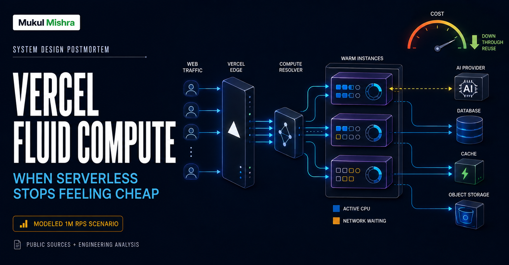
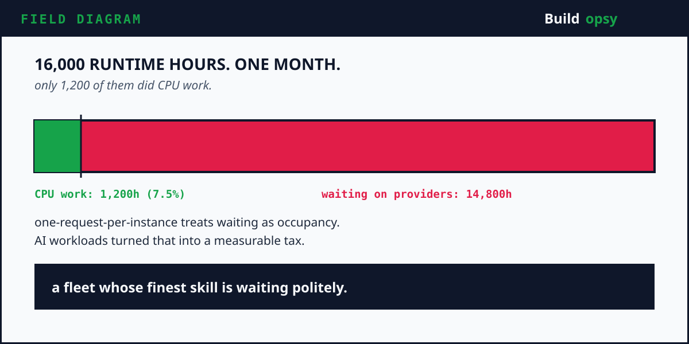
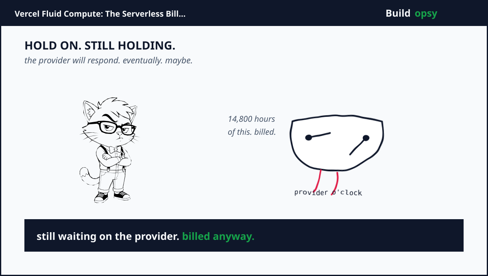

1. The Request Arrives. The Bill Starts.
Serverless promised a clean bargain. Write a function. Deploy it. Pay when it runs. No servers to patch, no idle fleet to explain, no capacity meeting where someone says “peak traffic” and everyone quietly opens a spreadsheet.
Then applications became AI applications. A function now authenticates a user, checks a quota, calls a model, waits for tokens, streams the responseand maybe calls another tool. The CPU works for milliseconds. The network waits for seconds. Traditional serverless billing does not always care about that distinction.
Vercel's AI Gateway provides a perfect stress case. Vercel wrote that, in its first month of availability, AI Gateway handled roughly 16,000 runtime hours. Only 1,200 hours involved actual CPU work. The other 14,800 hours were mostly waiting for AI providers to respond. That means about 7.5 percent of runtime was active CPU work.
The function looked alive. The CPU was mostly not. The invoice, naturally, had no philosophical objections.

2. Why Vercel Became a Billion-Dollar Infrastructure Bet
Vercel began with a sharp developer experience around Next.js deployment. It grew into a platform for building and serving web applications, then pushed into AI Cloud infrastructure. In September 2025, Vercel announced a $300M Series F at a $9.3B post-money valuation. The round included Accel, GIC, BlackRock, Khosla Venturesand existing investors.
The valuation is not the interesting part by itself. The interesting part is what investors are buying. Vercel is an abstraction layer over cloud infrastructure, with a global delivery network, build pipeline, serverless functions, AI SDK, AI Gatewayand sandboxed execution. The product promise is simple: developers should ship code without becoming part-time capacity planners.
That promise creates a nasty obligation. Vercel must solve the capacity planning on behalf of every customer, including the customers who send a request to a function and then wait on OpenAI, Anthropic, a database, or a slow third-party API. If Vercel pays for that idle time, developer convenience becomes Vercel's cost of revenue.
Vercel's public Fluid Compute posts say the platform now powers over 45 billion weekly requests, with over 75 percent of function invocations using Fluid Compute. The company reports savings of up to 95 percent for some workloads. These figures are not universal guarantees. They reveal the direction of the optimization: reuse warm resources, allow concurrencyand bill active CPU separately from memory waiting.
3. The Old Model Was Not Broken. It Was Honest.
Traditional serverless has a very understandable shape. A request arrives. The platform finds or creates an isolated instance. The function runs. The response returns. The instance may disappear. Isolation is strong, scaling is convenientand the model is easy to explain.
The waste appears when the function blocks on I/O. If 1,000 requests each wait three seconds for a provider, the platform may hold 1,000 instances even though the CPU could have handled the active parts of those requests with a fraction of that capacity. The platform is protecting isolation. The customer is paying for the protection. The function is staring at a loading spinner.
There is a second problem. A burst of 100 requests can create 100 cold-start opportunities. If the workload is bursty, the platform must choose between over-provisioning warm instances and accepting latency while new instances boot. Either way, the cost of uncertainty lands somewhere.
Vercel's answer is not to abandon serverless. It changes the unit of reuse. A Fluid instance can process multiple concurrent requests. The instance becomes more like a small server, while the deployment and scaling experience remains serverless. The trick is not marketing. It is making concurrency safe enough that one customer's waiting request does not block another customer's active request.
4. The Resolver Problem Nobody Sees
Concurrency creates a routing problem. If a request should reuse an already open connection to a warm function instance, the next request has to reach the right Function Router pod. Random routing destroys reuse. Perfect affinity creates hotspots. The largest region has more router pods and therefore more chances to miss the warm connection you wanted.
Vercel describes a service called compute-resolver. It behaves like a DNS-style resolver for proxy pods, remembers where a function was routed, improves the chance of reusing an existing TCP tunneland avoids concentrating a sudden traffic spike on one router pod. Vercel reports that the resolver handles more than 100k RPS at peak and resolves in under a millisecond at p99.99.
This is the part people skip when they say “just reuse instances.” Reuse is not a boolean. It is a placement problem under load. The router needs enough memory of past decisions to improve locality, enough randomness to avoid hotspotsand enough health information to stop routing into a dead tunnel.
The service exists because the simple architecture created a second-order problem. The function instance was not the hard part. Finding it again was.
5. The Failure Sequence
Picture a global launch. A customer releases a new AI-powered shopping assistant. At 09:00, traffic is quiet. At 09:07, a social post catches fire. At 09:08, requests triple. At 09:09, every function calls the model provider. At 09:10, the functions are alive, but most are waiting.
In a one-request-per-instance system, instance count follows request count. Cold starts increase. Connections multiply. Memory stays allocated while upstream responses stream. The provider slows under its own load. Retries begin. The retry storm creates more instances. Someone looks at CPU and says it is only 18 percent.
That 18 percent is not comforting. It is an indictment. The system has paid for a fleet whose most important feature is waiting politely.

burst is uneven
preserve locality
sub-ms lookup
one warm runtime
not waiting
memory remains
back to client
keep the cache warm
The optimization is a chain. Locality enables reuse, reuse enables concurrencyand active CPU pricing makes waiting less expensive.
Fluid attacks the sequence at three points. Existing instances receive more work. The resolver sends requests toward reusable capacity. Active CPU pricing separates execution from waiting. None of those removes the provider's latency. They stop provider latency from multiplying the platform's compute bill.
6. The One Million RPS Cost Test
Vercel reports more than 100k RPS for compute-resolver, not one million RPS for the entire platform. So let us normalize the comparison. Assume one million function events per second, 2 KB total request and response metadata per event, three copies for routing and safetyand a 30-day month.
The logical traffic is 1,000,000 x 2 KB x 2,592,000 seconds = 5.18 PB per month. That is before payloads, model streams, logs, tracesand retries. Now assume the old one-request-per-instance shape pays $0.0000012 per event for origin compute, instance lifetime, routingand platform overhead. The current-shaped bill is 1,000,000 x 2,592,000 x $0.0000012 = $3.11M per month.
My proposed shape allows concurrency, drops stale retries, reuses warm instancesand separates active CPU from provider wait time. Suppose only 30 percent of events require origin executionand the effective origin rate falls to $0.0000008 per event. That is 300,000 x 2,592,000 x $0.0000008 = $622,080 per month. Add $350,000 for edge routing, memory, observability, failoverand the resolver layer. The proposed envelope is approximately $972,000 per month.
| At 1M events/s | Current-shaped model | Proposed Fluid-style model |
|---|---|---|
| Origin events | 1,000,000/s | 300,000/s after reuse and coalescing |
| Modeled event rate | $0.0000012 | $0.0000008 |
| Core monthly work | $3.11M | $622k |
| Edge, memory, safety | Included in wider estimate | $350k |
| Modeled monthly total | $3.11M | $972k |
| Difference | $2.14M/month, about 69% lower | |
7. What I Would Improve Next
Make concurrency a contract. Not every function is safe to run concurrently. Shared globals, file writes, connection poolsand poorly scoped caches can create cross-request leaks. Fluid needs a clear runtime contract, isolation testsand automatic fallback for functions that fail the contract.
Separate waiting classes. Waiting on a model provider is different from waiting on a databaseand both are different from waiting on a customer webhook. Track them separately. A single “duration” metric encourages teams to optimize the wrong part of the request.
Put a budget on retries. A platform that scales instantly can also amplify a bad retry policy instantly. Retry budgets should be shared across function, providerand customer boundaries. If the upstream is returning 429, spawning more warm capacity is not resilience. It is enthusiasm with a credit card.
Move data less. Vercel's own Fluid material emphasizes placing compute near the data rather than pretending every workload belongs at every edge location. Keep dynamic compute in a small set of deliberate regions. Use the edge for routing and cacheable delivery. Global replication is not freeand it does not become free when drawn as a globe.
Bill for value-shaped work. Active CPU pricing is a good step because it maps billing closer to actual execution. The next step is exposing cost per successful response, cost per streamed tokenand cost per cache hit. Customers need to know whether a feature is fast because it is efficient or fast because it is burning a larger hole through a reserved fleet.
Protect the resolver. The resolver is a control-plane dependency. It should have bounded state, regional failover, overload sheddingand a safe fallback route. If the resolver goes down, the platform should lose reuse efficiency before it loses request correctness.
8. The Tradeoff Nobody Puts on the Launch Slide
Fluid Compute makes the server more efficient, but it also makes the runtime more interesting. Concurrency means requests share a process. Shared processes mean state leaks become possible. A forgotten global variable, a reused buffer, or a cache key missing a tenant identifier can turn a cost optimization into a security incident.
The safe design needs isolation at the data boundary even when it relaxes isolation at the process boundary. Credentials, request context, trace IDsand tenant data must be scoped per invocation. The runtime can share sockets, bytecodeand memory pages. It cannot share assumptions about who owns the response.
There is also a fairness problem. A function with long model waits can occupy memory for a long time. A function with expensive CPU work can monopolize execution slots. The scheduler needs separate limits for active CPU, concurrent requests, memory, open connectionsand response duration. One number called “timeout” is not a scheduler.
My rollout plan would start with I/O-heavy functions that already have idempotent handlers. I would canary them by function ID, compare active CPU milliseconds, memory GB-hours, p95 time to first byte, error rateand reuse rate, then expand gradually. A platform should not convert every customer at once just because the dashboard has a cheerful green button.
9. Three Numbers I Would Watch Every Morning
Warm reuse rate. If 99 percent of requests reach a router with reusable capacity, the architecture is behaving as designed. If it falls to 90 percent, instance creation and cold starts may rise before average CPU shows anything dramatic.
Active CPU ratio. Divide active CPU milliseconds by wall-clock milliseconds. In Vercel's AI Gateway example, 1,200 active hours divided by 16,000 runtime hours is 7.5 percent. That ratio tells you whether CPU billing and wall-clock billing are measuring the same thing. Usually they are not.
Cost per successful streamed response. Cost per invocation rewards clever splitting and punishes useful streaming. Cost per user hides noisy tenants. A successful response is closer to the value the platform delivers. Break it down further by model provider, region, functionand cache outcome.
At one million events per second, a one percent change is 10,000 events per second. Under the current-shaped model at $0.0000012 per event, that one percent represents 10,000 x 2,592,000 x $0.0000012 = $31,104 per month. A tiny graph movement can pay for a serious engineering project.
10. The Verdict
Vercel's Fluid Compute is not just a cheaper Lambda clone. It is a response to a particular change in software. Modern functions spend more time waiting on remote systems, especially AI providers, while users still expect instant streaming output.
The winning move is not to hide the wait. It is to stop treating the wait as a dedicated machine. Persistent tunnels, a locality-aware resolver, concurrent execution, warm reuse, predictive scalingand active CPU billing form one coherent answer.
The sharpest lesson is architectural. Serverless is not a property of the function. It is a property of the operating model. If the platform can safely multiplex waiting work, it can preserve elasticity without paying one full instance per nervous request.
At the beginning, the function is waiting for a model. At the end, the platform is waiting for the next function. That is the difference between a cloud bill and a cloud business.
The request was never expensive because it ran. It was expensive because everyone kept a seat warm while it thought.
Sources and Method
Vercel's funding, Fluid Compute, compute-resolver, Active CPUand AI Gateway figures come from Vercel's official posts and the company announcement. The 1M RPS scenario is my own normalized model. It is not Vercel's confidential telemetry or invoice. The purpose is to show how concurrency and work reduction change the shape of a bill.